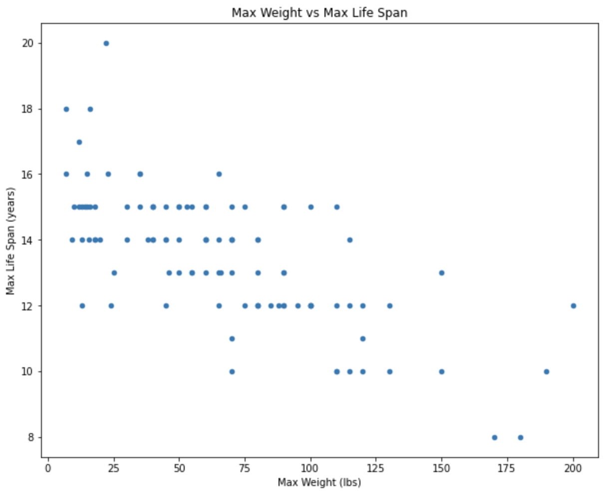
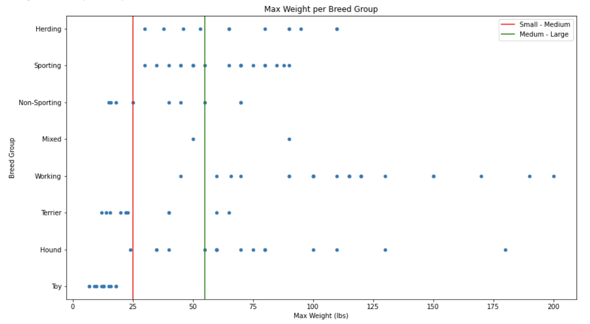

Lesson 8 - Scatter Plots
At the end of this lesson, you will be able to:
- Create a scatter plot to compare two columns of numeric data.
- Create a range chart to compare a column of numeric data with a column of categorical data.
- Explain why a correlation between two columns can't, by itself, prove that one causes the other.
Two columns of data
Let's look at the Maximum Life Span chart again - and try asking it some new questions. What is the max lifespan of a 55 pound dog? What size of dog will live the longest on average? Is there a correlation between the size of a dog and how long it will live? Go ahead, give it a shot.

Those questions cannot be answered from this chart. Bar charts and histograms examine one column of data at a time. To see relationships between two pieces of information, such as a dog's weight and life span, we need a chart that can examine two columns at once.
Scatter plots
Scatter plots show combinations of values from two numeric columns - one on each axis, one dot per row - and they're the chart to reach for when you want:
- Seeing patterns and trends between two numeric values
- Numeric data with lots of different values
- Continuous data (no gaps between whole numbers, for example, weights)
So - what's the plot below saying about dog weight and lifespan? Take a minute with it before reading on.

Range chart
The same scatter-plot function can also draw a range chart, showing the spread of a numeric column within each category. What does the chart below show?

The vertical lines divide dogs into small (< 25 lbs), medium (25 - 55 lbs), and large (> 55 lbs) categories.
Correlation is not causation
Look back at the weight-versus-lifespan scatter plot. The points drift downward as you move right: heavier breeds tend to have shorter max life spans. When two columns move together like this - one goes up as the other goes up, or one goes up as the other goes down - we call it a correlation. On a scatter plot, correlation is exactly that visible trend: the points roughly follow a line instead of scattering like confetti.
Here's the trap, and it's one of the most important ideas in this whole unit: seeing that A and B move together tells you nothing, by itself, about why. There are always at least four possible explanations:
- A causes B. Maybe the thing on the x-axis really does drive the thing on the y-axis.
- B causes A. Or the arrow points the other way - the y-axis thing drives the x-axis thing.
- Some third thing C causes both. A hidden factor (a confounder) pushes A and B around together, and they never touch each other at all.
- Coincidence. With enough datasets in the world, some pairs of numbers will line up beautifully for no reason whatsoever.
The classic worked example: ice cream sales and drowning deaths rise and fall together, month after month, year after year. It's a strong, real correlation. So - does ice cream cause drowning? Do drownings drive grief-stricken communities to ice cream? Of course not: the confounder is warm weather. Sunny summer days send people to the ice cream stand and into rivers and pools; the two numbers rise together because summer causes both. Nobody's ice cream cone is murderous - but a scatter plot of the two columns would happily show you a beautiful trend and let you draw the wrong conclusion.
A pattern in a scatter plot is the beginning of the analysis, not the end. Which of the four explanations fits? What additional information would distinguish them? For ice cream and drowning, we might ask whether the correlation survives when comparing only days with the same temperature. That is the kind of question that can reveal a confounder.
The Week 8 Assignment asks for exactly this reasoning: when a pattern appears, lay out the possible explanations and identify the evidence needed to tell them apart. Practice on the dog data: why might heavier breeds live shorter lives? Which explanations are plausible, and what evidence would test them?
Activity 1 - Dogs scatter plot
On your own, or with a partner, open up the Dog Scatter Plot Colab Notebook and make a copy. Think of a question that plotting two columns might answer, then modify the program to use the two columns you chose. What question are you trying to answer? Did the plot come out the way you expected - or surprise you? And what assumptions, if any, are you making when you read it?
Activity 2 - States scatter plot
Time for a new dataset - this one full of interesting facts about the 50 states. You can work with a partner or on your own.
Open up this States Colab Notebook and make a copy. Make the two scatter plots and answer the questions in the Notebook.
If you have any questions, post them on the Ask Questions! discussion topic.